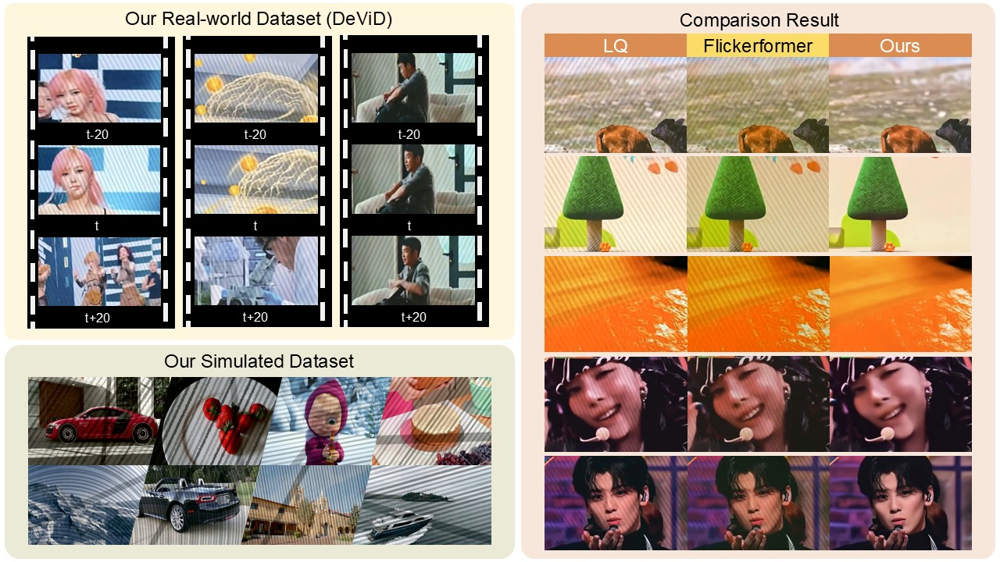
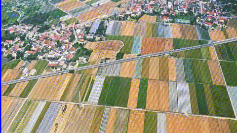
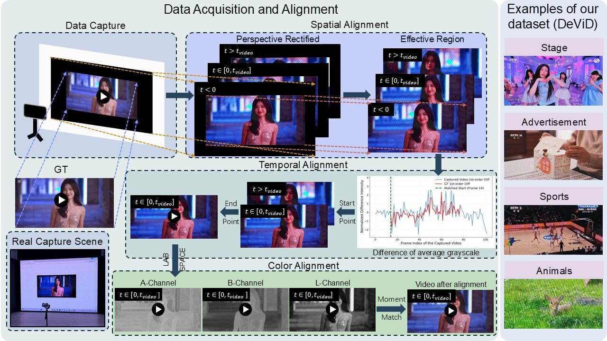
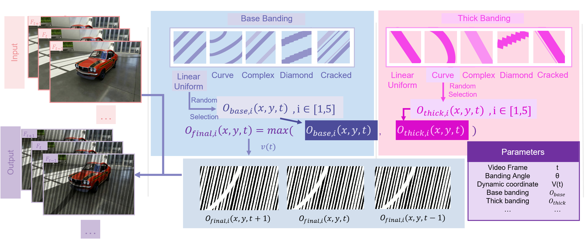
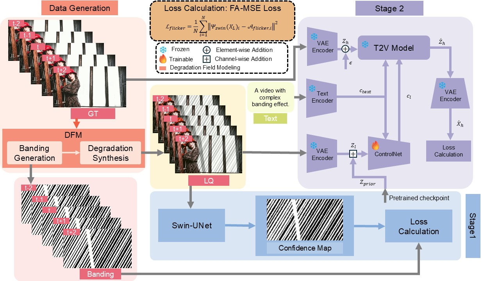
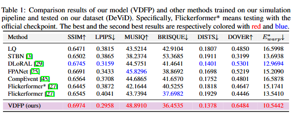
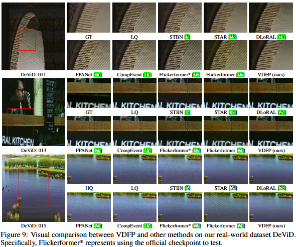

Video Deflickering Results

Abstract
Capturing digital screens with smartphones frequently induces severe banding due to hardware synchronization mismatches. Existing video restoration methods struggle with these structured, periodic luminance fluctuations, often resulting in residual artifacts or over-smoothed textures. We firstly construct DeViD, a real-world dataset in various scenes to deal with the lack of available datasets. Then we propose VDFP (Video Deflickering with Flicker-banding Priors), a novel perception-guided generation framework. First, we introduce a Degradation Field Modeling Based on Rolling Shutter Mechanism (DFM) capable of synthesizing complex multi-banding scenarios. Second, we present a spatial-temporal continuous prior perception (CPP). Unlike traditional binary segmentation, this module is optimized via a Flicker-Aware Mean Squared Error (FA-MSE) to capture the luminance transitions. By zero-initializing an augmented input layer, our model preserves pre-trained generative priors as well as spatial-temporal prior perception. Extensive experiments demonstrate that VDFP significantly outperforms other methods, eliminating complex banding with high-fidelity spatial details and temporal consistency.
Methods



Experimental Results
Quantitative Comparisons (Table)

Visual Comparisons (Figures)
